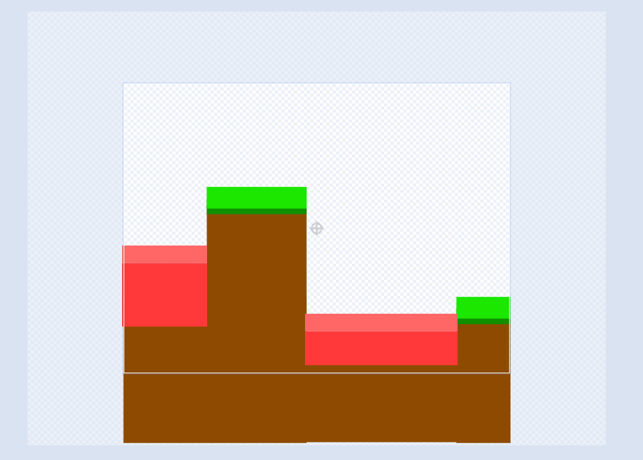

・環境準備
・あとがき
まずスクラッチを開き、新しいコスチュームを作成しプレイヤーとステージを書きます。この時の注意は、ステージの横幅を画面の横幅に合わせることです。合わせないとずれてしまいうまくいきません。 またプレイヤーの角をあまり出さないようにしてください。ひっかってしまいます。 次に「x」「x加速」「y」「y加速」「ジャンプ中」とういう名前の変数を作成します。これで準備完了です！
下のコードと同じようにプレイヤーのコスチュームで作ってください。
これでプレイヤーの動きは完成です。矢印キーが押されたら加速を0.9と書いてあるところはだんだんスピードが出て早くなって行くのを プログラムにあらわしたものです。次のステップではこの変数と関連した動きを作成していきます。 |
次は、最後のステップです。右のボタンのプログラムを開いていください。このプロジェクトは 背景の座標からプレイヤーの位置をひいてスクロールする仕組みになっています。 |
このプロジェクトは実際に色判定でやっているので色が違ったりするとうまく動かなかったりすることもあります。またこのプログラムをそのままプログラムを映すと実際のコスチュームと並び方が違うから自分なりのコスチュームを作って プログラムを組んでください。